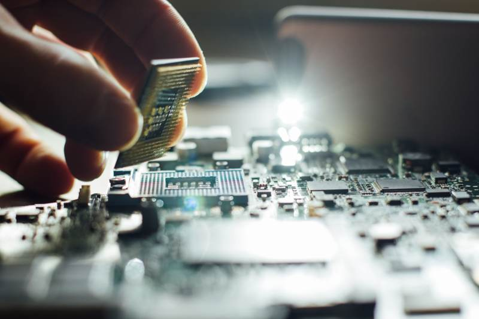

Introduction to DIY Computer Repair
Many of us rely heavily on our computers for work, entertainment, and staying connected. When an issue arises, it can be frustrating and inconvenient. However, not every problem requires a professional technician. With the right guidance, you can tackle some common computer issues yourself.
In this guide, we'll share some valuable DIY computer repair tips from the skilled technicians at WMTechsupport. These tips can save you time and money, and empower you to resolve minor issues independently.

Understanding Common Computer Issues
Slow Performance
A sluggish computer can be a major annoyance. One common cause is too many background programs running simultaneously. To address this, check your startup programs and disable any unnecessary ones. Keeping your system updated and performing regular malware scans can also help maintain optimal speed.
Overheating
Overheating can lead to hardware damage if not addressed. Ensure your computer is in a well-ventilated area and clean out any dust from vents and fans regularly. For laptops, consider using a cooling pad to help dissipate heat.
Basic Troubleshooting Techniques
Software Glitches
Software issues can often be resolved with a simple restart. If the problem persists, check for software updates or reinstall the program. For operating system errors, running a system restore can revert your computer to a previous, functional state.
Hardware Problems
If you're experiencing hardware issues, first check all cable connections. For peripherals like keyboards and mice, try using different USB ports. If a specific component seems faulty, such as RAM or the hard drive, reseating or replacing it might solve the problem.

Preventive Maintenance Tips
Regular maintenance can prevent many common issues. Keep your operating system and software updated to patch security vulnerabilities. Use antivirus software and perform regular scans to protect against malware. Finally, back up your data regularly to avoid data loss in case of a failure.
- Keep your workspace clean and dust-free.
- Ensure proper ventilation to prevent overheating.
- Use a surge protector to guard against power surges.
When to Seek Professional Help
While DIY repairs can be effective, some problems require professional attention. If you're dealing with complex hardware failures or persistent software issues that you can't resolve, it's wise to consult a technician. WMTechsupport offers expert services to handle more challenging repairs with precision.
By following these tips, you'll be better equipped to handle basic computer issues on your own. However, remember that professional help is always available when you need it. Empowering yourself with knowledge and basic skills can make a significant difference in your computer maintenance journey.